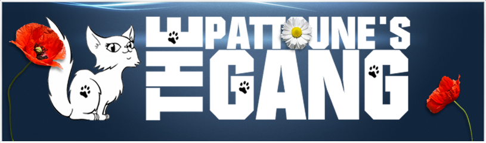

Présentation de l'association
Sauvetage et replacement de chats uniquement en Région Parisienne et en Picardie.
Nous cherchons des familles d'accueil en Région Parisienne et Picardie.

Sauvetage et replacement de chats uniquement en Région Parisienne et en Picardie.
Nous cherchons des familles d'accueil en Région Parisienne et Picardie.